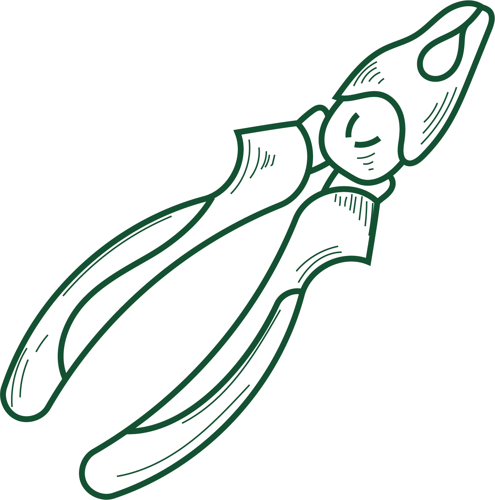
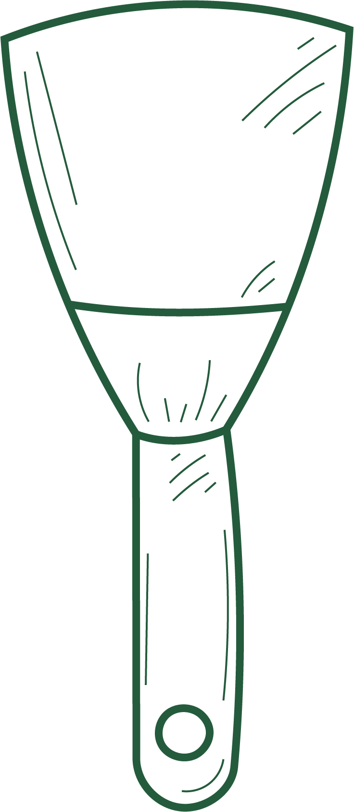

Creeër je verticale moestuin
Stap 2
Je hebt je ruimte gekozen om je moestuin op te maken. Ben je geen handige harry dan kan je kiezen om een verticale moestuin te kopen, wil je toch je eigen kunstwerk maken? Ontdek dan snel alle opties onder DIY.
Maak je keuze

Doe-het-zelf

Aankopen